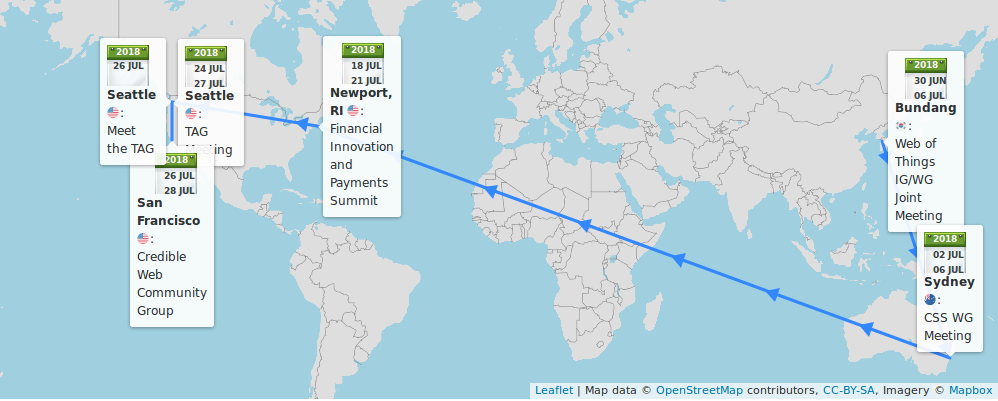
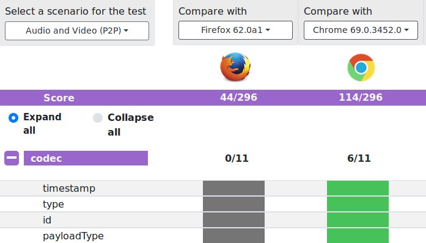
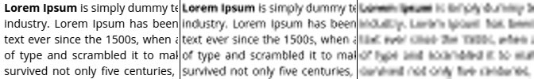
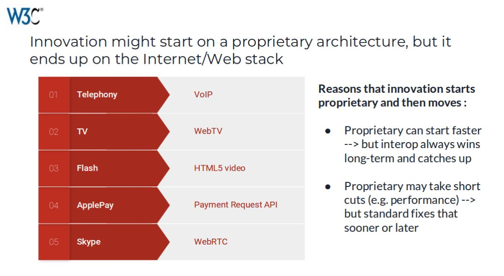
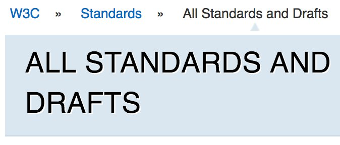

2: @csswg #Houdini meeting https://github.com/w3c/css-houdini-drafts/wiki/Sydney-F2F-July-2018 - already in full action in🇰🇷, cf https://twitter.com/philwalton/status/1013650000251793409
July@W3C: group meetings, training course, devmeetup, conference, etc. https://www.w3.org/participate/eventscal.html
https://twitter.com/w3cdevs/status/10137596331466874893-4: continuation of #WebOfThings #f2fmeeting in #Bundang 🇰🇷, hosted by @withtta https://www.w3.org/WoT/IG/wiki/F2F_meeting,_30_June-5_July_2018,_Bundang,_Korea#Tue.2C_3_Jul_2018:_Technical_Sessions
https://twitter.com/w3cdevs/status/10137596363008163843-5: @csswg #f2fmeeting in #Sydney 🇦🇺 hosted by @Google. Busy agenda! https://wiki.csswg.org/planning/sydney-2018#agenda
https://twitter.com/w3cdevs/status/10137596346944634883: opening a new course run of @w3cx's #HTML5 & #CSS Fundamentals course: learn the basic building blocks of #Web design and style! https://www.edx.org/course/html5-and-css-fundamentals with @Microsoft's teachers @edXOnline

https://twitter.com/oneM2M/status/1013765634499457029
https://twitter.com/w3cdevs/status/101375963796170342418-20: @w3c'>@w3c's #WebPayment work at @Opal_Group's Financial Innovation and Payments Summit 2018 in #Newport 🇺🇸 http://opalgroup.net/conference/financial-innovation-payments-summit-2018/ cc @w3c'>@w3c's staff @JAlanBird @RachelYager
https://twitter.com/w3cdevs/status/101375964138853580926-27: Help rebuild trust in the #Web at the Credible Web #CommunityGroup #f2fmeeting in #SanFrancisco 🇺🇸. Newcomers (and remotees) are welcome! Find out more: https://www.w3.org/community/credibility/2018/06/26/f2f2/ https://twitter.com/w3cdevs/status/976128411654537217
More details on the meetup… https://twitter.com/torgo/status/1014535990323671040
https://twitter.com/w3cdevs/status/101375964563740262426: @tag also organizes a #public #meetup "MeetTheTAG". Come learn about current TAG's work (design reviews of emerging #Web technologies https://github.com/w3ctag/design-reviews/issues ) and give feedback in real time! https://ti.to/w3c-tag/meet-the-tag-seattle #Seattle 🇺🇸
https://twitter.com/w3cdevs/status/101375964429941964824-26: @tag #f2fmeeting in #Seattle 🇺🇸, hosted by @Microsoft https://github.com/w3ctag/meetings/tree/gh-pages/2018/07-seattle
https://twitter.com/w3cdevs/status/1013759642768498688Interested in presenting at this #manga #publishing @W3CWorkshop? Please submit your interest before 20 July! https://www.w3.org/publishing/events/tokyo18-workshop/cfp.html#position-statements @w3c_keio @Keio_univ_PR 🇯🇵 https://twitter.com/w3c/status/1011609291701223425
https://twitter.com/w3cdevs/status/1013768524307759105This is an update to the existing 2013 Candidate Recommendation of #CSS Text Decoration https://www.w3.org/TR/2018/CR-css-text-decor-3-20180703/#recent-changes
Among other changes, this pushes text-decoration-skip to the next level of this module (level 4 https://drafts.csswg.org/css-text-decor-4/#text-decoration-skip-property) for major rework https://twitter.com/w3c/status/1014077336776577024
The issues around text-decoration-skip that motivated the @csswg pushing this to level 4 can be explored in their github repo https://github.com/w3c/csswg-drafts/issues/727 https://github.com/w3c/csswg-drafts/issues/707 https://github.com/w3c/csswg-drafts/issues/843
Being a good #CSS designer is hard; but designing CSS itself… wow
https://twitter.com/w3cdevs/status/1014123483301806080#WebRTC allows real-time audio/video connections in browsers, either in #P2P mode or mediated by server components.
This first Candidate Recommendation of WebRTC Stats define a set of metrics to monitor and debug these connections #timetoimplement https://twitter.com/w3c/status/1014079872220782592
The API is developed in its own github repo under the editorship of @vr000m and @alvestrand
https://github.com/w3c/webrtc-stats/
https://twitter.com/w3cdevs/status/1014139031771385860.@w3c Working Groups need to demonstrate during #CandidateRecommendation that their specifications have interoperable implementations.
Usually, for browser techs, they do this by developing and running tests in Web Platform Tests https://github.com/web-platform-tests/wpt https://twitter.com/w3cdevs/status/986283413316472837
https://twitter.com/w3cdevs/status/1014139035328110592Because of this and other #WebRTC specificities, an open source #WebRTC-specific test framework, KITE, has been developed to complement the usual Web Platform Tests https://github.com/webrtc/KITE
https://twitter.com/w3cdevs/status/1014139041112051718For WebRTC Stats, evaluating and verifying interoperability for its defined metrics is hard: they reflect ever changing network and system conditions, e.g. round-trip time between 2 remote browsers https://www.w3.org/TR/webrtc-stats/#dom-rtcremoteinboundrtpstreamstats-roundtriptime
https://twitter.com/w3cdevs/status/1014139038599712768KITE can be used to test #WebRTC implementations, but also #WebRTC services and applications in controlled conditions, across OS, browsers, devices, etc.

https://twitter.com/w3cdevs/status/1014139043679014918WebRTC stats, its current status and its possible future evolutions were discussed at the recent #WebRTC Working Group meeting (see slides 75-87 in https://www.w3.org/2011/04/webrtc/wiki/images/e/eb/WebRTCWG-2018-06-20.pdf)
https://twitter.com/w3cdevs/status/1009038711739355136
https://twitter.com/w3cdevs/status/1014139049378971648And that level of control will also enable to test to a higher degree of confidence the level of interoperability for #WebRTC Stats metrics.
@callstatsio (a great consumer of these metrics) have already started exploring this https://webrtc-stats.callstats.io/verify
https://twitter.com/w3cdevs/status/1014139046900232192.@jsajka presents the updated landscape of #CAPTCHA and their impact on #accessibility published today https://www.w3.org/TR/2018/WD-turingtest-20180703/ https://twitter.com/w3c/status/1014073532765147137
#CAPTCHA stands for "Completely Automated Public Turing Test to tell Computers and Humans Apart†- these challenges often embedded in Web sites to prevent bot-based abuses.
https://twitter.com/w3cdevs/status/1014155214486634503The previous version of “Inaccessibility of CAPTCHA†had been published 13 years ago, during which a lot has changed, but #CAPTCHA are still there, and still an #accessibility challenge.
https://twitter.com/w3cdevs/status/1014155219435913217It provides a comprehensive overview of these challenges and possible remediations.
https://twitter.com/w3cdevs/status/1014157344371068929The @wai Accessible Platform Architecture Working Group is looking for input on the following questions.
https://twitter.com/w3cdevs/status/1014157348120776704“while some #CAPTCHA solutions are better than others, there is currently no ideal solution. It is important then to exercise care that any implemented CAPTCHA technology correctly identify people with disabilities as human.”
https://twitter.com/w3cdevs/status/1014157346258542594If you have relevant input, please bring this to the github repository, preferably before the end of this month https://github.com/w3c/apa/issues/new
https://twitter.com/w3cdevs/status/1014157353355276289Are there concerns for certain categories of persons with disabilities that remain unaddressed or insufficiently addressed in this document?
Are you aware of relevant research in this area we missed?
https://twitter.com/w3cdevs/status/1014157351748816897Does this document fully capture current problems with #CAPTCHA and related systems?
Are there other potential solutions that should be added?
https://twitter.com/w3cdevs/status/1014157350146625536In addition to the aforementioned Candidate Recommendation of #WebRTC Stats https://twitter.com/w3cdevs/status/1014139031771385860, the #WebRTC Working Group released two new Working Drafts today https://twitter.com/w3c/status/1014074867912728576
MediaStreamTrack Content Hints allows to annotate media streams (obtained from e.g. a mic, a camera or a screen capture) with the type of content, to distinguish e.g. speech from music for audio, or slides from real-world videos.
https://www.w3.org/TR/2018/WD-mst-content-hint-20180703/
https://twitter.com/w3cdevs/status/1014175787224879104This distinction of type of media streams enable a number of optimization in how the streams are encoded and pre-processed - typically, it's more important to keep text legible on a video streams coming from slide, and noise-suppression is probably inadequate for music recording.
https://twitter.com/w3cdevs/status/1014175791725318144The #WebRTC DSCP Control API is an extension to the main #WebRTC spec to provide a more finegrained control on network QoS (quality of service) via DSCP (differentiated service code points) https://en.wikipedia.org/wiki/Differentiated_services
https://www.w3.org/TR/2018/WD-webrtc-dscp-20180703/
https://twitter.com/w3cdevs/status/1014175794229338112As #WebRTC gains more and more adoption, it needs to accommodate a growing number of usages, which the Working Group is expecting to address over time with these relatively small extensions (and probably bigger ones down the line…)
https://twitter.com/w3cdevs/status/1014175796758503424The Web Performance Working Group is the one bringing us all the key primitives for measuring #WebPerf: http://performance.now(), the various performance timelines (resources, user, paint, server) and more (beacon, page visibility, etc) https://www.w3.org/webperf/ https://twitter.com/w3c/status/1015163254124044294
The proposed new charter includes new work on network error logging, an HTTP client hint for device memory and a generic reporting framework (usable for network error logs, CSP, etc)
https://w3c.github.io/network-error-logging/
https://w3c.github.io/device-memory/
https://w3c.github.io/reporting/
https://www.w3.org/2018/07/webperf-charter
https://twitter.com/w3cdevs/status/1015169355322150913Project ideas are often about building a tool, playing with new gadgets, and brainstorming in the spirit of both contributing to the community and bringing technical challenges for individuals/teams.
It's #GeekWeek! Once a year, @w3c staff is taking a week to experiment, explore and innovate. It is a time to collaborate with colleagues with different expertise, or just learn about new trends and systems.
https://twitter.com/w3cdevs/status/1016325107919319041Check out some past projects: https://www.w3.org/blog/2015/10/geek-week-at-w3c/ by @ourmaninjapan; https://www.w3.org/blog/2016/07/exploring-web-platform-cross-dependencies/ by @dontcallmeDOM and @tidoust; https://github.com/w3c/Eunomia by @tripu. Stay tuned for more!
https://twitter.com/w3cdevs/status/1016325109563445248Thank you @omnidirect for the Japanese translation of @w3c's #WebStandard Support for #RDFa via #XHTML Modularization http://www.asahi-net.or.jp/~ax2s-kmtn/internet/rdf/REC-xhtml-rdfa-20150317.html #html5j #w3c_keio
日本èªè¨³ã‚’ã‚ã‚ŠãŒã¨ã†ï¼@omnidirect for XHTML+RDFa 1.1 - 第3版, XHTMLモジュール化ã«ã‚ˆã‚‹RDFaã®ã‚µãƒãƒ¼ãƒˆ http://www.asahi-net.or.jp/~ax2s-kmtn/internet/rdf/REC-xhtml-rdfa-20150317.html #html5j #w3c_keio #html5j #w3c_keio @naomi5500
https://twitter.com/w3cdevs/status/1017373848151486464Yes, hurry up! The deadline is fast approaching (in 3 days). Please submit an application for a #diversity #scholarship so to participate in all @w3cTPAC meetings next October in #Lyon 🇫🇷 https://www.w3.org/2002/09/wbs/1/diversity-scholarship-application-2018/ https://twitter.com/w3cdevs/status/1009455310258491392
https://twitter.com/w3cdevs/status/1017786937636278275The report of the Web5G workshop is out! https://www.w3.org/2017/11/web5g-workshop/report.html
This workshop was held back on May 10-11 hosted by @gsma in London 🇬🇧and has been looking at the intersections between the many innovations happening at the network layer and their impact on the app layer. https://twitter.com/w3c/status/1018768300195696641
The report summarizes some of the main findings out of the presentations done at the workshop and paves the way to more detailed analysis as part of a follow-up Web5G task force.
https://twitter.com/w3cdevs/status/1018872410068660225In addition to the report, the slides, minutes and position papers of the workshop are all linked from the workshop page: https://www.w3.org/2017/11/web5g-workshop/
Get in touch with @dontcallmeDOM if you want to be involved in the follow up task force
https://twitter.com/w3cdevs/status/1018872414258843649Next #W3CWorkshop will be looking at how to manage access to sensitive features in #Web #browsers! https://www.w3.org/Privacy/permissions-ws-2018/cfp.html - hosted by @Qualcomm, September 18-19, in #SanDiego, CA 🇺🇸 https://twitter.com/w3c/status/1017318418184327169
Browsers provide access to more and more features that cannot be granted to any random #Web site. One way to gate this access is by asking permission from the #user. But getting the user consent is not necessarily easy...
https://twitter.com/w3cdevs/status/1018899131820118017Second, the well-known dialogue fatigue means that bombarding #user with permission requests makes each decision less meaningful. This leads to situations where a feature gets removed from sight because it creates too much noise, as illustrated by https://twitter.com/firefox/status/990990184824147974
https://twitter.com/w3cdevs/status/1018899139243991046First, how informed is that consent? Very little if the request gets made when the page has hardly finished loading, or if the underlying risks are hard to grasp.
https://twitter.com/w3cdevs/status/1018899136840683521On the #Web, this is made all the more complicated as pages can be embedded in other pages, making the context of the permission request harder to understand for end #users.
https://twitter.com/w3cdevs/status/1018899144210042880And there is an art of how and when to ask for permission, in which Web app developers need to play their part - @mulligan shared his best practices on the matter a while ago: https://techcrunch.com/2014/04/04/the-right-way-to-ask-users-for-ios-permissions/
https://twitter.com/w3cdevs/status/1018899141773156353All these considerations and more will be part of what workshop participants will discuss in September. If you want to contribute to the conversation, please submit an expression of interest or a position paper before August 17 - @w3c workshops are open to all, do not hesitate!
https://twitter.com/w3cdevs/status/1018899146860789761A NEW #app to help list characters in text found on a #Web page: https://r12a.github.io/app-analysestring/ Useful to all #WebDevelopers!
Check out other cool #Apps developed by @ri to make the Web truly worldwide: https://r12a.github.io/applist https://twitter.com/r12a/status/1018069770661482498
https://twitter.com/w3cdevs/status/1019192497237569537Not to be missed! This devmeetup is hosted @MSFTReactor in Seattle 🇺🇸 https://twitter.com/kennethrohde/status/1019248710537052163
https://twitter.com/w3cdevs/status/1019473293697568769First project coming out of @w3c'>@w3c's #GeekWeek is Reffy, a specification exploration tool. Reffy crawls, parses, analyzes, and reports on potential anomalies that @w3c'>@w3c specifications may have. https://twitter.com/w3cdevs/status/1016325105239150596
Reffy's reports are published on a daily basis and help detect issues such as invalid #WebIDL content or missing normative references. This is another handy tool for all editors of @w3c documents!
https://twitter.com/w3cdevs/status/1019476757450289152Find out more and read about Reffy's possible development in helping automate @MDN documentation maintenance https://www.w3.org/blog/2018/07/exploring-css-property-definitions/
https://twitter.com/w3cdevs/status/1019476767134842880Now, would it be useful to improve the syntax used in #CSS specs to define properties, so that Reffy can run deeper analyses? https://github.com/w3c/csswg-drafts/issues/2921 Comments welcome!
https://twitter.com/w3cdevs/status/1019476764693876736What progress is being made by the @w3payments #WorkingGroup? Get an update by @ibjacobs on the Payment Request #API, the Payment Handler #API, card payment security, and many more. https://twitter.com/w3c/status/1019656438413713415
https://twitter.com/w3cdevs/status/101981949187679846630: a new [Chapters Web Standards] meetup on #WebPackaging with @jyasskin, in #Pittsburgh 🇺🇸 by @codeandsupply https://twitter.com/briankardell/status/1019674904306671616
https://twitter.com/w3cdevs/status/1019821709191516160Echnida is @w3c's automated publication system for technical reports on /TR: https://www.w3.org/TR/
https://twitter.com/w3cdevs/status/1021757916842536963Since the beginning of July, it is possible to publish #CandidateRecommendation with Echidna. https://twitter.com/marcosc/status/1016422058635522049
https://twitter.com/w3cdevs/status/1021757923633115136Echidna was built to speed up the process as much as possible by removing tasks that can be automated by a machine. This way, @w3c's #WorkingGroups can easily publish and make sure /TR shows an updated view of their work.
https://twitter.com/w3cdevs/status/1021757922232229888@w3c's publication process follows strict rules enforced by publication rules (aka, pubrules) https://www.w3.org/pubrules/ and depends on the webmaster's availability. This often introduces delays in the publication that Echidna can reduce.

https://twitter.com/w3cdevs/status/1021757920344793088After submitting a document, Echidna runs a couple checks (quality, security, etc.) before publishing. @w3c's Echidna makes it easy to publish a new version of specifications after each modification. This way, readers are getting up-to-date documents.
https://twitter.com/w3cdevs/status/1021757926472671232Transitions requests should be submitted to https://github.com/w3c/transitions/issues and approved by the Directors and the W3C Communication team beforehand.
https://twitter.com/w3cdevs/status/1021757925231128577Echidna is also an open source project hosted on #github: https://github.com/w3c/echidna. We welcome any contributions/suggestions!
https://twitter.com/w3cdevs/status/1021757930385956866In the future, we expect Echnida to support more types of @w3c specifications. See the full list of documents' transitions at https://www.w3.org/pubrules/doc
https://twitter.com/w3cdevs/status/1021757928796286978The @tag #F2Fmeeting started yesterday, and continues until tomorrow. https://twitter.com/w3cdevs/status/1013759642768498688
To catch up with yesterday's discussions, you can read up on their live minutes https://twitter.com/hadleybeeman/status/1021797604915437568 - and in general, follow @hadleybeeman for an LT report from the meeting
https://twitter.com/w3cdevs/status/1022098370704429057Today, among the topics to be discussed is the Privacy & Security questionnaire.
This is checklist that @w3c groups used to make sure they've considered aspects of their technologies that may impact privacy & security
https://w3ctag.github.io/security-questionnaire/
2nd day minutes have started https://twitter.com/hadleybeeman/status/1022157065349808128
https://twitter.com/w3cdevs/status/1022098374634491905These reviews are themselves managed in github https://github.com/w3ctag/design-reviews/issues - the issue template in this repo includes a request for groups to go through this review
https://twitter.com/w3cdevs/status/1022098378178609152When @w3c specs move forward in the standardization process, they need to get a review from the @w3ctag - as part of these reviews, the @w3ctag requests groups to fill the questionnaire, both to ensure the exercise has been done, and to help guide their own reviews.
https://twitter.com/w3cdevs/status/1022098376266006528Naturally, this privacy & security questionnaire itself needs to be maintained, as bugs and gaps get identified https://github.com/w3ctag/security-questionnaire/issues/
https://twitter.com/w3cdevs/status/1022098379793465345This is tomorrow! Don't miss it if you're in #Seattle 🇺🇸https://twitter.com/the_jsf/status/1021882469916794881 https://twitter.com/w3cdevs/status/1013759644299419648
https://twitter.com/w3cdevs/status/1022113482324561920You can get a glimpse at to what the future of #WebRTC looks like in our recent thread from the previous #F2Fmeeting of the group https://twitter.com/w3cdevs/status/1009038711739355136
It took a bit longer than usual, but the new charter for the #WebRTC Working Group has now been approved https://twitter.com/w3c/status/1021760465423294465 https://lists.w3.org/Archives/Public/public-webrtc/2018Jul/0077.html https://twitter.com/w3cdevs/status/988788167615623168
https://twitter.com/w3cdevs/status/1022131899391791104And that charter too has now been approved https://twitter.com/w3c/status/1022122928366870530 https://www.w3.org/2018/distributed-tracing/ https://twitter.com/w3cdevs/status/987019824051212288
https://twitter.com/w3cdevs/status/1022142858864877568âš This workshop has been rescheduled to September 26-27 - deadline for expression of interests and position papers is on August 17 https://twitter.com/w3cdevs/status/1018899131820118017
https://twitter.com/w3cdevs/status/1022815257448927232Extension date for the call for participation: 31 July. The program committee already received 47 submissions, so do not hesitate to join the discussion! https://www.w3.org/publishing/events/tokyo18-workshop/cfp.html https://twitter.com/w3cdevs/status/1013768524307759105
https://twitter.com/w3cdevs/status/1022821470823743488Deadline is fast approaching (4 August - 5pm CEST)! Get funding for your involvement in W3C standards' development. 🤞Good luck to all applicants! https://twitter.com/w3cdevs/status/1006544269149077504
https://twitter.com/w3cdevs/status/1022826051460890629”In cases where DOM manipulations would cause jank, this [proposed API] instead allows the user-agent to split up the work across several frames, yielding for script and user interactions. When the updates are finished processing, the result is displayed without jank.†https://twitter.com/kennethrohde/status/1024044511528472576
https://twitter.com/w3cdevs/status/1024048594955849728Today and tomorrow, @dontcallmeDOM is participating to the @MDN product advisory board meeting hosted by @MSFTResearch in Seattle 🇺🇸 https://developer.mozilla.org/en-US/docs/MDN/MDN_Product_Advisory_Board
The meeting is in the same room as the @tag meeting last week. But THEY did not have a Unicorn 🦄

https://twitter.com/w3cdevs/status/1024333283029442560